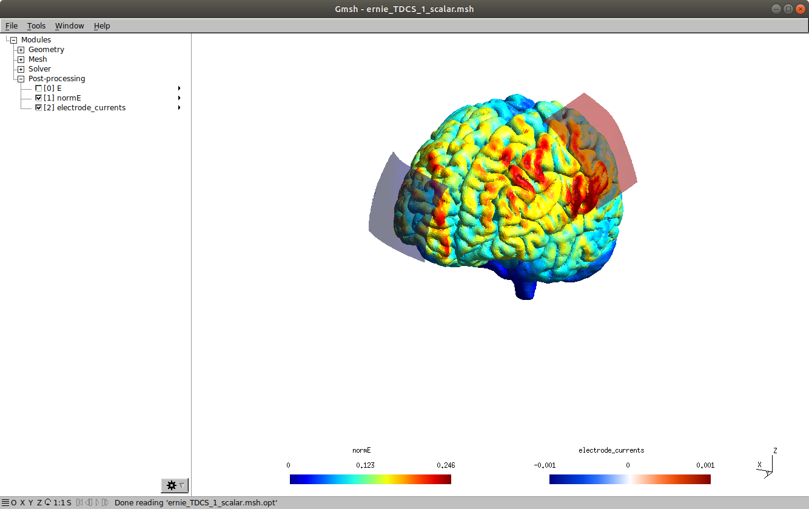
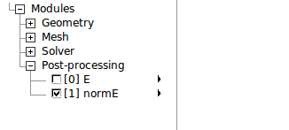
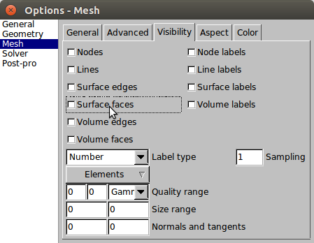
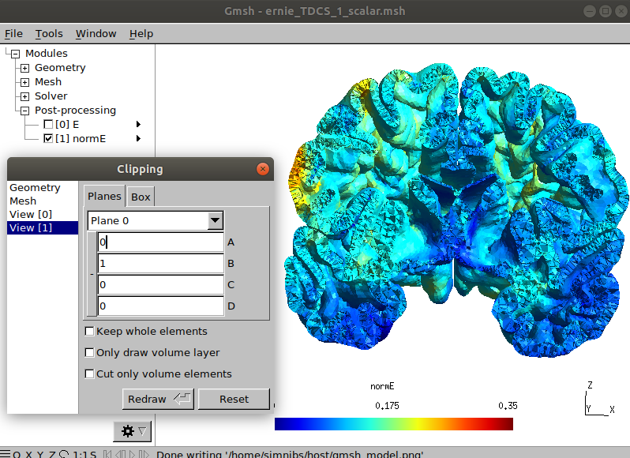

Visualizing Results¶
This tutorial comes after the tutorial on Setting up and Running Simulations. Please be sure to complete it before going further.
Visualizing Results in Gmsh¶
Gmsh is a powerful program for 3D visualization. However, it has a somewhat steep learning curve. For this reason, SimNIBS writes .opt files with basic visualization configurations in addition to the mesh files. Here we will give a walk-through of a few useful features in Gmsh.
Note
Gmsh is distributed together with SimNIBS, you don’t need to install it separately.
Starting Gmsh¶
Gmsh automatically opens when a simulation is finished.
Alternatively, you can start Gmsh by double clicking in the ernie_TDCS_1_scalar.msh file or typing in the terminal
gmsh ernie_TDCS_1_scalar.mshThe following window will appear:
We see the gray matter surface with the magnitude of the electric field (magnE), as well as the electrode currents. You can rotate the model with the left mouse button, translate it with the right button, and zoom with the mouse wheel.
Selecting Where to Visualize¶
To visualize another surface, such as white matter:
Go to Tools → Visibility

and select Elementary entities

Select surfaces and volumes to be visualized. In SimNIBS, we have defined
1: White Matter volume
2: Gray Matter volume
3: Cerebrospinal Fluid (CSF) volume
4: Skull volume
5: Skin volume
6: Eye volumes (headreco models only)
101+: Electrode rubber layer volume
501+: Electrode gel / sponge volume
The corresponding surfaces have the number 1000 + volume value. For example, 1002 corresponds to the gray matter surface. The only exception are the electrode contacts, numbered 2100+. You can select multiple surfaces or volumes by holding Ctrl. Selecting 1001 and clicking on Apply, we can see the white matter surface:

Selecting What to Visualize¶
You can select the field to be visualized by checking the boxes in the left of the Gmsh window.
To visualize the surfaces or volumes without any field, go to Tools -> Options -> Mesh and click on Surface Faces or Volume Faces
Changing the Scale¶
To change the scale of a field visualization, select Tools → Options → View [N] and change the Min and Max values.

Exporting an Image¶
To create an image, go to File -> Export (or press Ctrl+E) and type in a file name with a .png or .jpg extension.
Other Functionalities¶
We recommend users to explore the many functionalities of Gmsh. One can, for example, produce the image below by selecting the Volume 2 for visualization an clipping the model in Tools → Clipping.
Visualizing Results in MATLAB¶
To visualize results in MATLAB, add the <SIMNIBS_INSTALL_DIR>/matlab/ folder to your MATLAB path. Afterwards, type
mesh_get_simulation_result
or use
mesh_show_surface
to have more control over the visualization.
Further Reading¶
For more information on visualization and simulation output, please see the SimNIBS 2.1 tutorial paper.